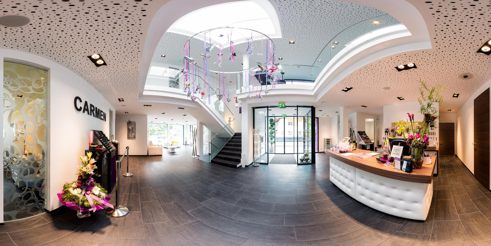
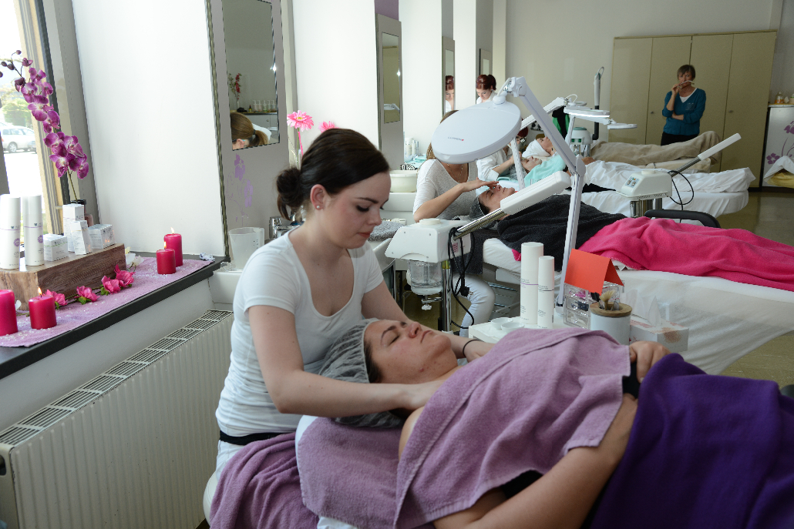
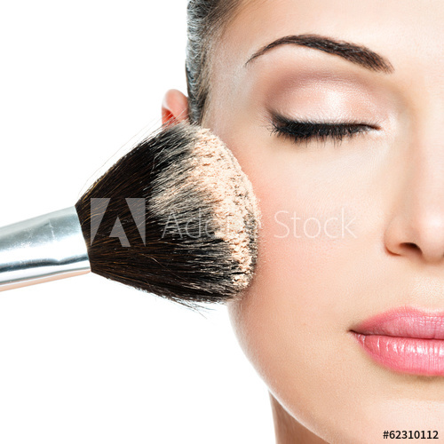
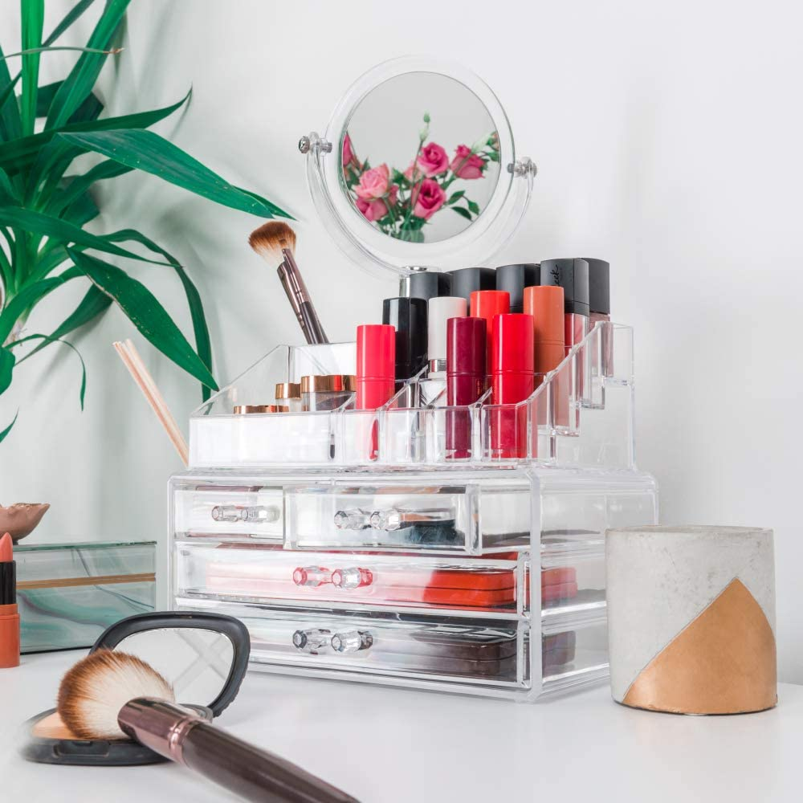

SKIN ROYAL COSMETICS by SUSAN
Beauty In Laubacherstr
Cosmetics and Care from Head to Toe
Welcome by Skin Royal - your new cosmetic studio in Charlottenburg-Wilmersdorf
Royal Kosmetik, ein Institut für Biologische Ganzheitskosmetik, liegt an der Laubacherstraße 18 in Charlottenburg-Wilmersdorf. Hier dürfen Sie überzeugende Ergebnisse erwarten, die auf individuell abgestimmten,ürlichen Wirkstoffen basieren und nicht auf einer konfektionierten Kosmetik. Nach einer eingehenden Hautanalyse erfolgt die individuelle Behandlung.für Ihre Bedürfnisse werden aus hochwirksamen natürlichen Ölen und Essenzen die optimalen Präparate angemischt. Verwendet werden zum Beispiel Arnika- und Calendula-Extrakt, Kamille, Johanniskraut- und Camelliaöl sowie Squalan zum Stabilisieren empfindlicher Haut. Zum Regenerieren und Aufbauen empfehlen sich Nachtkerzen- und Algenöl, Grünteeextrakt, Weizenproteine, ZiZao und DaZao. Die entwickelten Produkte können selbstverständlich auch für die Pflege zuhause gekauft werden.
ENTSPANNUNG, WOHLBEFINDEN & SCHÖNHEIT DELUXE BEI IHREM KOSMETIKSTUDIO CARMEN!  This is a link to a website- Sensible Skin
- Spezial Treatment
- Body treatment
- Make-up
- Manikure
- Pre- Anti Ageing
- Regeneration
- We maintain the highest quality,
the varied range of treatments and the empathetic competence of each employee
to enable you to take a pleasant break from everyday life!
These are my Treatment Suggestions

- Professional wrinkle injectionwith hyaluronic acid and face modeling. This treatment is used to build up volume in the face or the cosmetic correction of asymmetries and is carried out in our studio by an experienced alternative practitioner.
In den gepflegten Räumlichkeiten erwartet Sie ein Ambiente, das wie geschaffen ist für Ruhe und Entspannung. Zusätzlich sorgt das freundliche und kompetente Team,
das sich durch Fortbildungen und Schulungen stets auf dem neuesten Stand hält. Zu den wesentlichen Kompetenzen gehören Entspannungsbehandlungen, Anti-Agin-Behandlungen, Reparieren,
Modellieren, Desensibilisieren und Akne-Behandlungen. Schauen Sie am besten selber vorbei und informieren Sie sich über
die Möglichkeiten! Nach einer eingehenden Hautanalyse erfolgt die individuelle Behandlung. Speziell für Ihre Bedürfnisse werden aus hochwirksamen natürlichen Ölen und Essenzen die optimalen Präparate angemischt.
Verwendet werden zum Beispiel Arnika- und Calendula-Extrakt, Kamille, Johanniskraut- und Camelliaöl sowie Squalan zum Stabilisieren
empfindlicher Haut. Zum Regenerieren und Aufbauen empfehlen sich Nachtkerzen- und Algenöl, Grünteeextrakt, Weizenproteine, ZiZao und DaZao. Die entwickelten Produkte können selbstverständlich auch für die Pflege zuhause gekauft werden.Wenn Kollagene und elastische Fasern nachlassen, empfehlen wir die Kaviar- Behandlung. Wertvolle Eiweiße geben Ihrer Haut die Spannkraft wieder zurück, die Kollagenstützfasern werden gestärkt, die Mimik erholt sich, die Gesichtszüge entspannen. Eine Kaviar-Ampulle und Kollagen werden mittels Ultraschall/Reizstrom eingeschleust. Es folgt eine Lymphdrainage/Massage. Unter Blaulicht werden wertvolle Biocell-Produkte eingearbeitet. Abschließend geben wir eine Verwöhnpackung auf das Gesicht, Hals und Dekolleté, Tages- oder Nachtpflege.

s
- Rediscover yourself, according to your type and in your colors.
Make-up consultation and face measurement, then we will create your make-up. - Tages-Make-up (kleines Make-up) 35,00 €
- Spezial-Make-upss zu besonderen Anlässen Preis nach Vereinbarung
- Augenbrauen färben 9,00 €
- Wimpern-Dauerwelle hält etwa 3 Monate 29,00 €
- Strahlende Augen unser Gestaltungs- und Pflegepaket – Wimpern Dauerwelle, Wimpern färben, Eye-Care-Lifting-Programm Dauer 90 Min. 55,00 €
- Hochfrequenz-Pinzetten-Haarentfernung, schmerzfrei, mit Langzeitwirkung, Preis nach Zeit, 1 Min. 1,00 € alt="500">  
Skin Rejuvenation
Make-up
UNSER MEDICAL SPA
Wellness für sie, ihn & die ganze Familie.
Not only women but also men have long since discovered the wonderful
effects of relaxing massages and revitalizing treatments in our cosmetic studio & day spa in Tyrol.
With a tailor-made range of treatments and applications for a wide variety of requirements and the hairdressing salon, we meet all requirements. Special packages for wellness lovers,
mother-daughter programs or relaxation days make the experience unique. Treat yourself to something special and get to know our new cosmetic studio & day spa in Landeck-Zams in Tyrol.
We look forward to you! Carmen, Christian & team